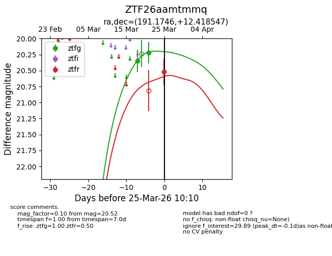
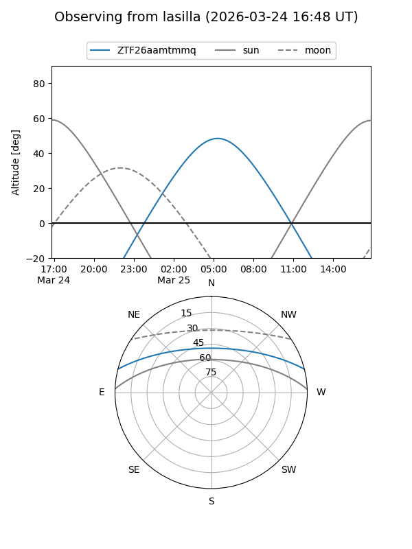
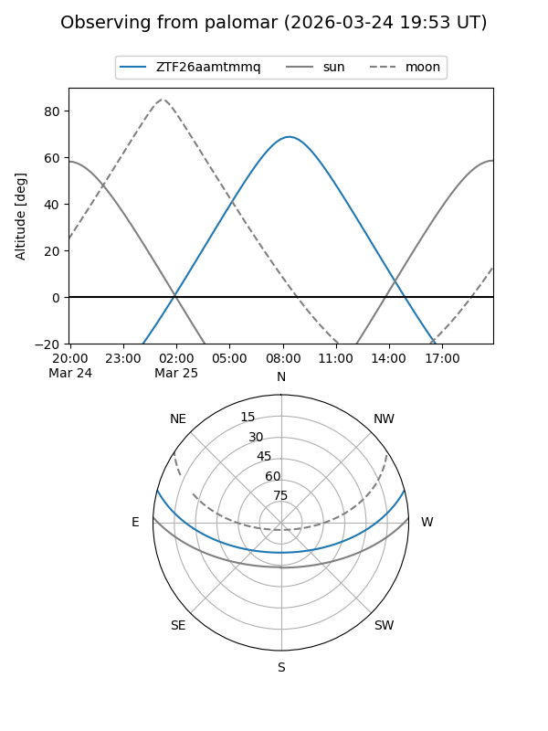
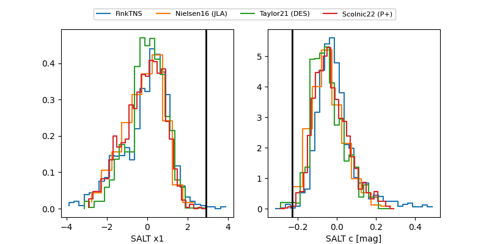

ZTF26aamtmmq
Target ZTF26aamtmmq at 2026-03-25 10:13
Aliases and brokers:
FINK: link
Lasair: link
ALeRCE: link
alt names
ZTF26aamtmmq (ztf,fink_ztf)
Coordinates:
equatorial (ra, dec) = 191.1746,+12.41855
equatorial (HMS+DMS) = 12:44:41.91,+12:25:06.77
galactic (l, b) = (296.4754,+75.20574)
Flags:
Photometry:
last ztfg=20.22, ztfr=20.52
2 ztfg, 1 ztfr detections
Lightcurve

Visibility


Additional plots
